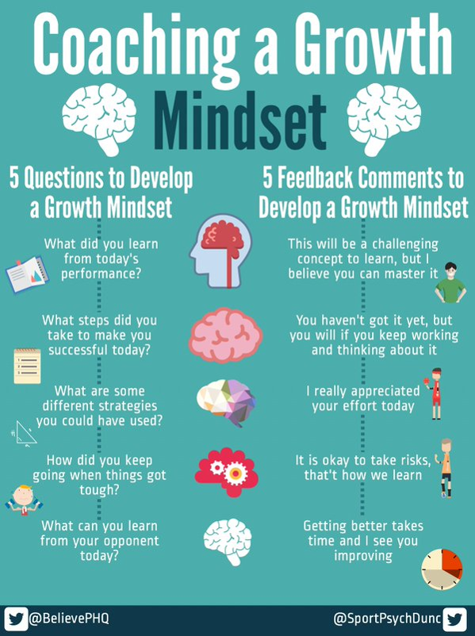

Carol Dweck on tutkinut tutkinut kasvun asennetta ja hänen tutkimuksiensa mukaan ihmiset voidaan jakaa kahteen kategoriaan. Toinen ryhmä pitää ominaisuuksia synnynnäisinä ja niihin ei pysty vaikuttamaan (engl. fixed mindset). Toinen ryhmä taas ajattelee, että tekemällä ja harjoittelemalla pystyn kehittymään (engl. growth mindset). Carol Dweckin mukaan palautteenannolla on suuri vaikutus kumpaan suuntaan ajattelutapa muokkautuu. Jos annamme palautetta työstä tai prosessista enemmän kuin lopputuloksesta ohjaa se ajattelutapaa kasvun asenteen suuntaan. (Carol Dweck, 2007)
Muuttumattomassa ajattelutavassa ("fixed mindset") pelaaja tai oppilas ajattelee olevansa huono tai epäonnistunut, jos ei onnistu jossain asiassa. Tähän liittyy voimakkaasti myös tunne siitä, että asiaan ei voi vaikuttaa eikä hän ole valmis ponnistelemaan haasteiden edessä. Tässä ajattelutavassa taidot ja osaaminen nähdään hyvin pitkälti synnynnäisenä lahjakkuutena eikä asiana, minkä voisi saavuttaa harjoittelemalla. Toiminta on tällöin yleensä kivaa niin pitkään kuin siinä pärjää. Mutta haasteiden edessä, jos ei olekaan enään hyvä tai ei koe pärjäävänsä saattaa innostus toimintaa kohtaan loppua äkisti.
Kasvun asenteen omaava pelaaja tai oppilas taas useimmiten tykkää haasteista ja näkee ne mahdollisuutena oppia ja kehittyä. Hän ei arvota pärjäämistään tai "arvoaan" pelkän lopputuloksen perusteella. Hän muuntaa haasteet kehityskohteiksi ja on valmiimpi ponnistelemaan kehittyäkseen paremmaksi ja voittamaan haasteet. Kun pelaaja ja tai oppilas omaa kasvun asenteen on hänen arvomaailmansa yleensä terveempi ja se kasvattaa myös sinnikkyyttä.
Esimerkkinä voimme ajatella pelaajaa, joka on esimerkiksi tehnyt paljon maaleja juniorisarjoissa ja häntä on aina kehuttu maalinteosta ja annettu ehkä jopa paljon vapauksia tämän ansiosta. Hän voi ajan myötä arvottaa tekemistään pelkästään maalien kautta ja kokee olevansa hyvä, koska tekee paljon maaleja. Kun jonain päivänä tämä junioripelaaja pääsee ikäluokassaan ns. top -joukkueeseen tai aikuisten sarjoihin ja hän ehkä kokeekin haasteita saada peliaikaa sekä maalinteko tökkii tai ei pääse edes samalla tavalla paikoille. Jos pelajaa omaa kasvun asenteen on hän todennäköisesti valmis tekemään töitä kehittyäkseen ja ymmärtää, että se vie aikaa. Hän ymmärtää, että on uuden hienon mahdollisuuden sekä haasteen äärellä, joka hänen tulee selättää saavuttaakseen jotain vielä suurempaa, kuten paikan avauskokoonpanossa. Jos taas pelaaja omaa muuttumattoman ajattelutavan saattaa hän ajatella olevansa vain liian huono sille tasolle ja lopettaa pelaamisen kokonaan tai tyytyä pelaamaan matalammalla tasolla, missä maaleja ja onnistumisia tulee ilman ponnisteluja.
Kasvun asennetta voimme kasvattaa antamalla palautetta työstä eikä niinkään lopputuloksesta. Painotamme arvostuksessa kehittymistä emmekä sitä, että joku on paras. Keskitymme myös vertailemaan itseämme oman kehityksen pohjalta emmekä muihin. Esimerkkinä olen aina ajatellut, missä hyökkääjä esimerkiksi tekisi pelissä paljon maaleja. Jos sanomme, että ”hienoa, teit paljon maaleja. Tosi hyvä” saattaa hän arvottaa tekemistään pelkästään maalien pohjalta. Jos sanomme syyn, miksi hän teki paljon maaleja, kuten ”Teit paljon hyviä lähtöjä linjan taakse ja pääsit maalipaikoille tätä kautta” tai ”Hyvin uskalsit haastaa vastustajia ja hakeutua aktiivisesti maalipaikoille”. Tällöin hän arvottaa tekemistään ja yrittämistään. Vaikka toisessa pelissä sama toiminta ei johtaisikaan yhtä hyvin maalipaikkoihin tai maaleihin arvottaa hän tekemisensä silti paremmin. Itsemääräämisteorian mukaan ihmisellä täyttyy tarvetyytyväisyys, kun hän kokee autonomian, pätevyyden ja kuuluvuuden tunnetta. Näillä on todistetusti myös positiivista vaikutusta sisäiseen motivaatioon. Pitkäjänteisyydestä olen saanut käsityksen, että sitä ei suoranaisesti voi opettaa. Se syntyy enemmänkin arvoista, kasvun asenteesta sekä sisäisestä motivaatiosta.
Jos luet kännykällä, klikkaamalla kuvaa se suurenee.
